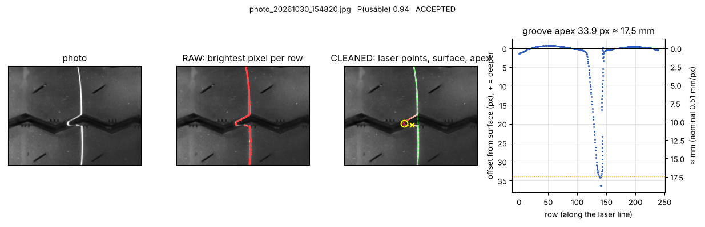
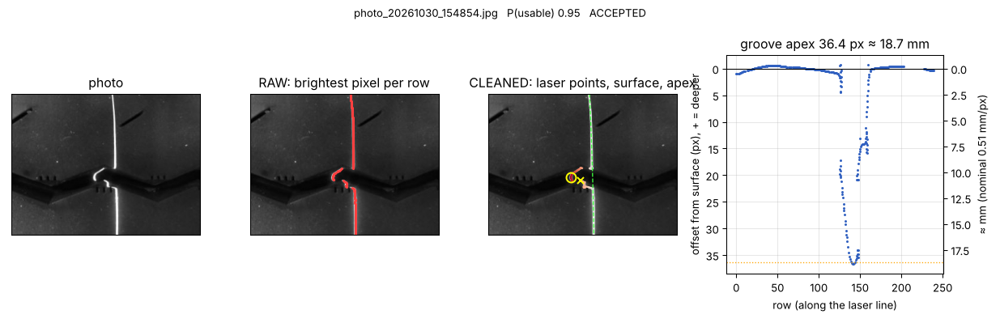
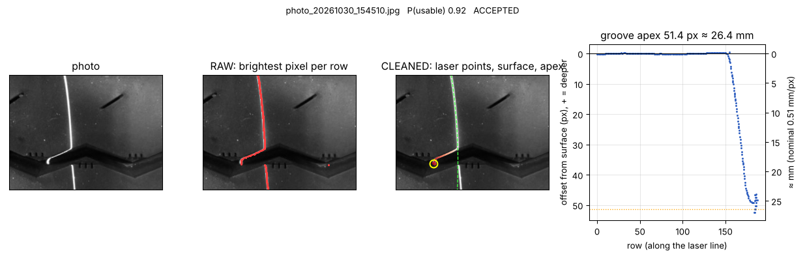
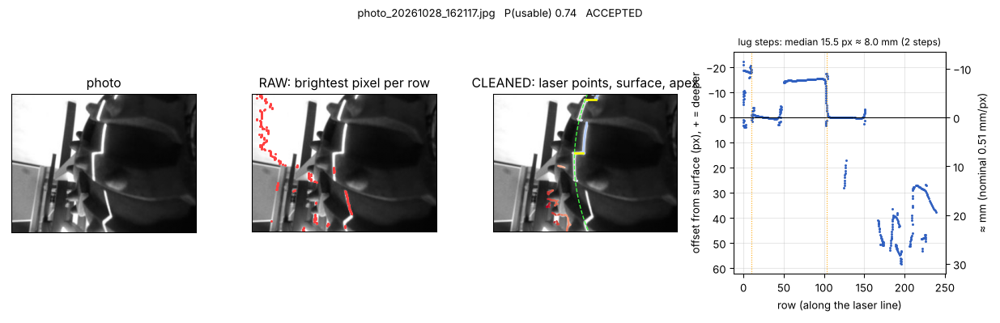
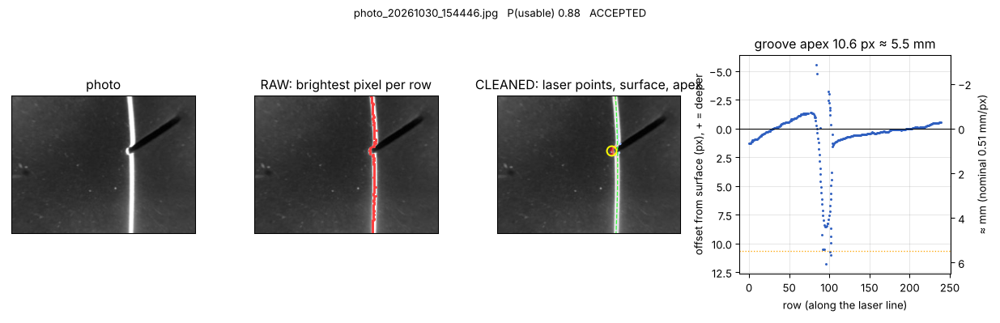
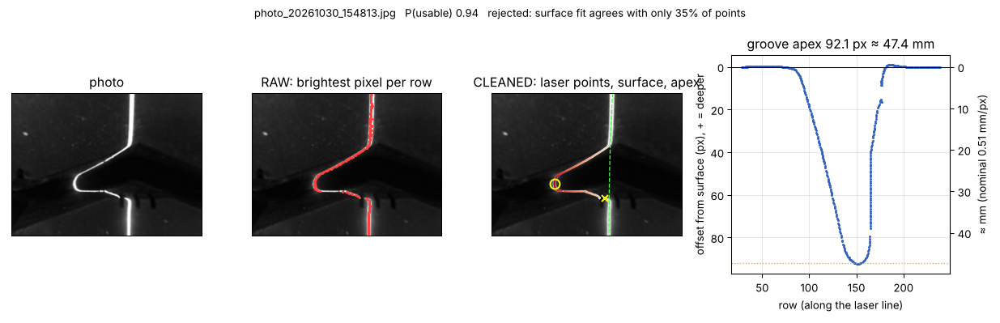
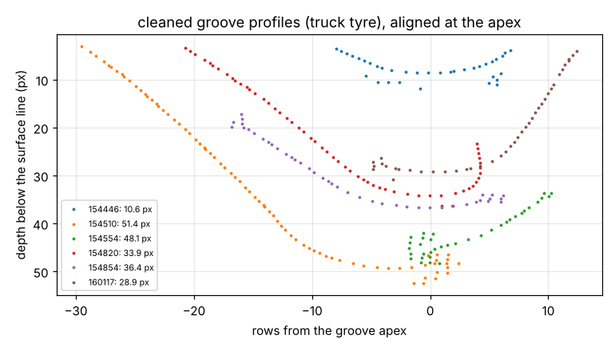
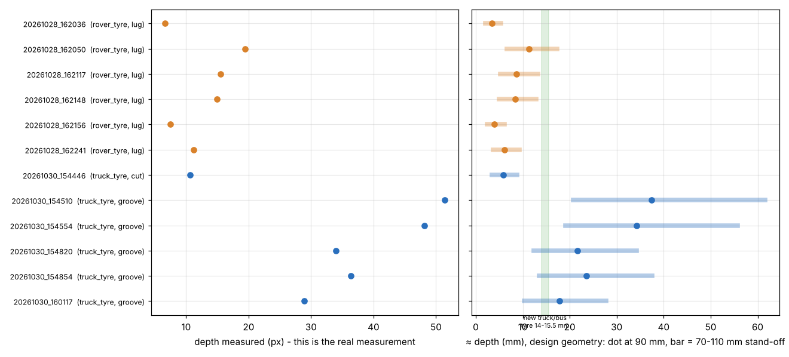

The photos from 8–30 Oct went through new signal processing and a small machine-learning model that picks out usable shots. The pixel measurements are solid and repeatable. The millimetre values are still estimates, because the laser wasn't fixed to the camera when these were taken.
passed the ML gate and the measurement checks
5 photos, 28.9–51.4 px. Same groove twice: 33.9 and 36.4 px.
6 photos, 6.6–19.5 px
finds 18 of 19 usable photos; the old hand rule found 10
Read the mm with care. Converted with the design geometry (laser 63 mm from the lens at 35°, 2.8 mm lens, 90 mm away), the groove comes out at about 24 mm. A new truck or bus tyre has only 14–15.5 mm of tread. Two frames also contradict a fixed laser: the further-away shots show bigger shifts, not smaller ones. The laser was most likely hand-held at varying angles, so the px → mm scale changed from shot to shot.
The pixel shift is the measurement. The mm column is the design-geometry estimate at 90 mm; the bar shows the range if the device was anywhere from 70 to 110 mm away. The amber tick marks 15.5 mm, a new tyre's full tread.
| photo | feature | shift (px) | ≈ mm @ 90 | range (mm) | 0 ─ 60 mm | P(usable) |
|---|








Most photos a hand-held device takes are unusable: no laser, too close and blurred, reflections, the line off the tyre. A logistic regression learns that decision from 12 numbers per photo: how much of the frame the line covers, how strong, bright, thick and saturated it is, how well it fits one surface, image sharpness, and background brightness.
I labelled all 86 photos by eye (19 usable) and tested two ways. Leave-one-out: train on 85, test the 86th, repeat. Leave-one-day-out: train on three days, test on the fourth, which is the realistic case of a new day, new light, new tyre.
The model's false alarms are wide rover shots with short laser arcs. The measurement checks that follow reject all of them. The regularisation strength was tuned on the held-out-day score, so treat 94 % as slightly optimistic. Retrain as more labelled photos come in.
| model | acc | prec | recall |
|---|---|---|---|
| leave-one-day-out | |||
| hand rule | 0.90 | 1.00 | 0.53 |
| logistic regression | 0.94 | 0.82 | 0.95 |
| random forest | 0.86 | 0.63 | 0.89 |
| leave-one-out | |||
| hand rule | 0.90 | 1.00 | 0.53 |
| logistic regression | 0.92 | 0.75 | 0.95 |
| random forest | 0.94 | 0.89 | 0.84 |
Synthetic test: grooves of 4–15 mm with sloped walls are measured within 0.8 px or 3 %; flat and no-laser photos return no groove.